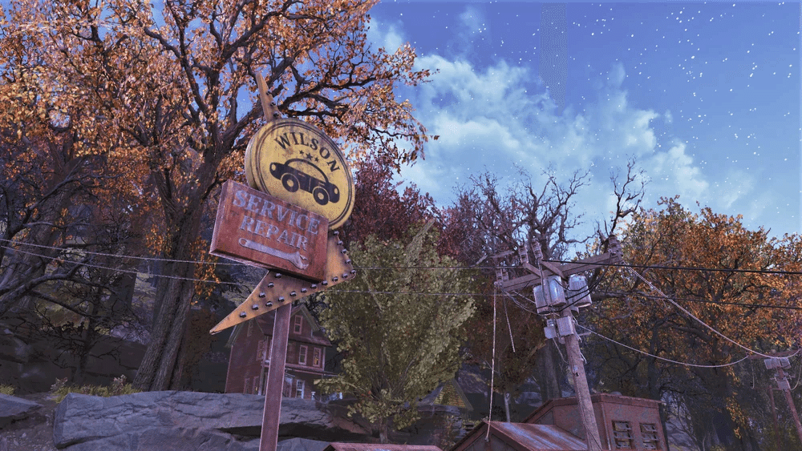
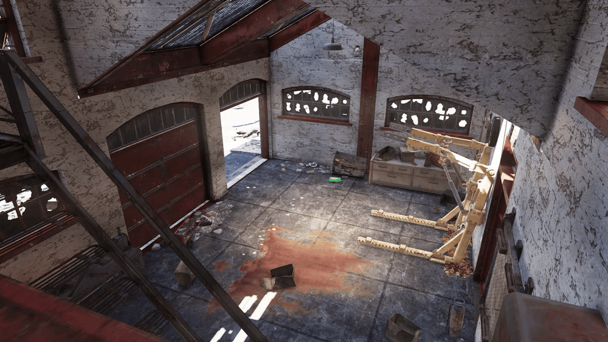

ウィルソン・ブラザーズ自動車修理屋
ウィルソン・ブラザーズ自動車修理屋は、『Fallout 76』のアパラチアの森林地帯に位置するロケーションです。
モーガンタウンの郊外にあります。
概要
場所:
森林地帯（モーガンタウンの東あたり）。背景:
戦前はリッチ・ウィルソンが所有していた小さな自動車修理工場です。敵:
主にスコーチが出現します。
レイアウト
この場所は主に2つの建物で構成されています。


自動車整備ガレージ:
道路沿いにある建物。
パワーアーマーステーションとアーマー作業台があります。
オフィスの手前の壁に、鍵のかかった救急箱があります。
ウィルソン家の住宅:
ガレージの裏手、丘の上にある赤い家です。
家の中には、モスマン博物館のポスターが飾られています（リッチ・ウィルソンがジェフ・レーン(ポイント・プレザントで紹介)から贈られたもの）。
地下室: カルト教団の祭壇があり、根や人間の遺体で作られています。生贄にされたモールラットも横たわっています。
誰かが点滴を受けていたような痕跡もあります。屋根裏: ジェットパックなどを使用して天井の穴から入ることができますが、特に何もありません。
注目すべき戦利品
ジャイアント・ティーポットの広告
ガレージの建物の奥の部屋、壊れたウォーターサーバーの横にある金属製の棚で見つかるメモ。
since 1938
ザ・ジャイアント・ティーポット
最高の栄誉を授与されました！
スイートウォーター・ブレンド・ティーは、最も繊細な風味と絶妙な香りを持ち、華やかな夜の歓待にも、静かな午後の休息にも完璧に調和します。
アパラチア最高級の品！ ぜひ今日、ザ・ジャイアント・ティーポットへお越しください！
バスルームの鍵
丘の上の家の中、モスマン博物館のポスターの横にある金属製の机の上にあります。
これを使うと、ポイント・プレザントのモスマン博物館にあるバスルームを開けることができます。
「戦前の単なる修理屋」という表向きの顔の裏に、「荒廃した世界観における謎めいたカルト活動の中心地」という、いかにも『Fallout』らしい不気味な裏の顔が隠されている、多層的なロケーションであるという印象を受けます。
モスマンミュージアムのバスルームの鍵が見つからない方も居たとは思いますがここにあります。
特にボブルヘッドも雑誌もありませんが、スコーチが湧くので、ホリデースコーチ等のルートに加えるといいと思います。
This article uses material from the “Endor” article on the Star Wars wiki at Fandom and is licensed under the Creative Commons Attribution-Share Alike License.
コミュニティ維持のため、寄付を受け付けております。
> COMMENTS